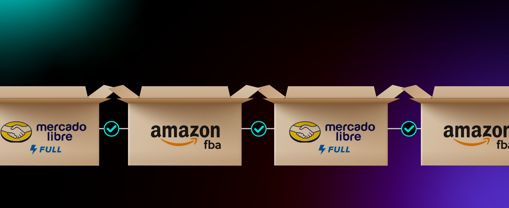

Operaciones
Con el VAS de Gestión de Orden de Ingreso, Melonn simplifica y asegura el envío a canales B2b estratégicos como:
Amazon FBA y Mercado Libre FULL
Crea la orden de ingreso en tu marketplace y la orden de venta en Órbita. Melonn se encarga de completar el resto del proceso logístico para que la mercancía llegue sin contratiempos.
¿Por qué usarlo?
cada ítem sale identificado como lo exigen tus clientes B2B.
reglas claras que el equipo ejecuta siempre igual.
embalaje correcto según lineamientos definidos.
menos reprocesos, más velocidad.
Tú creas la orden, Melonn hace el resto
Nos encargamos de todo lo que los marketplaces exigen:
⁉️ Preguntas frecuentes
No, para este VAS primero debes crear la orden de ingreso en tu canal de venta y dejarla en borrador.
Debes resolverlo antes de crear la orden en Órbita, ya que Melonn no puede enviar productos inactivos y esto podría presentar un problema en la entrega de la orden.
Melonn solo completa la información logística, no modifica el catálogo ni crea órdenes en el canal.
No, este VAS aplica solo para destinatarios verificados como Amazon FBA y Mercado Libre Full.